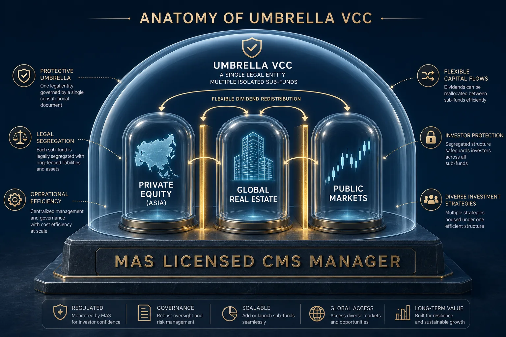

В мире управления крупным частным капиталом (HNWI) наступил момент «великого переселения». Структуры, которые десятилетиями считались эталоном — трасты на Каймановых островах или фонды в Лихтенштейне — стремительно теряют эффективность.
Сегодня вопрос не в том, где «дешевле» зарегистрировать компанию, а в том, какая структура выдержит комплаенс-аудит топ-тиер банков (Julius Baer, Lombard Odier, Pictet) и обеспечит реальную манёвренность активов.
01Токсичность «тихих гаваней»
Почему классические офшоры больше не работают? Для любого крупного банка юрисдикция Каймановых островов сегодня — это «красный флаг».
- Проблема
- Вы можете сэкономить на регистрации Cayman SPC, но застрять на 6–9 месяцев на этапе онбординга в банке.
- Последствия
- Упущенные инвестиционные возможности и бесконечные запросы AML-офицеров — «докажите сабстенс там, где его исторически не было».
02Сингапур: переход от офшора к «мидшору»
Сингапур предложил миру решение, которое объединяет налоговую оптимизацию офшора и репутационную чистоту финансового хаба уровня Лондона. Создание семейного офиса на базе управляющей компании с лицензией CMS (Capital Markets Services) — это сигнал рынку и банкам о том, что ваш капитал управляется по институциональным стандартам.
«Сингапур — это не про уход от налогов. Это про легальную эффективность, которую видит и принимает private banking уровня Lombard Odier». — редакция Charter Capital

Структура Umbrella VCC
Три столпа сингапурской архитектуры:
01Технология VCC (Variable Capital Company)
Введённая в 2020 году, структура VCC стала «швейцарским ножом» для семейного капитала. Она позволяет создавать зонтичные фонды, где активы разных направлений или членов семьи юридически сегрегированы друг от друга. Это даёт гибкость в управлении и абсолютную конфиденциальность — реестр акционеров VCC не является публичным.
02Налоговые льготы Section 13O и 13U
Сингапур — это не про «уход от налогов», а про легальную эффективность. При соблюдении минимальных требований по объёму активов (AUM) и локальным расходам, семейный офис получает освобождение от налогов (0%) на доходы от большинства видов инвестиций.
03Прямой канал к Private Banking
Когда ваш капитал упакован в структуру, регулируемую MAS (Monetary Authority of Singapore), вы перестаёте быть «клиентом из зоны риска». Для партнёров уровня Lombard Odier или EFG такая архитектура понятна и прозрачна. Это открывает доступ к закрытым пулам инвестиционных идей и private equity сделкам, которые недоступны обычным частным лицам.